الفصول وكل إصدار مع رقم صفحته
لمن كُتب، وكيف يُقرأ
يوثّق هذا المستند كل ما طُلب ونُفّذ في نظام مهام الدعم الفني والصيانة منذ بدء بنائه في 31 أكتوبر 2026. يشرح كل إصدار: ما الطلب، وما الذي تغيّر، وكيف يستخدمه الموظف، وما يلزم المهندس معرفته. ويُحدَّث المستند مع كل إصدار جديد. كل صور الشاشات فيه مأخوذة من الوضع التجريبي للنظام ببيانات وهمية.
الفصل 1 (الملخص التنفيذي) يكفي لمعرفة الوضع العام، ثم الفصل 9 (ما تبقى قبل الإطلاق). والفصل 6 يشرح أسباب القرارات المهمة.
الفصل 2 (الشاشات والأدوار)، ثم الصناديق الخضراء «للمستخدم» داخل كل إصدار في الفصل 5.
الفصول 3 و4 و7 و8، والصناديق الزرقاء «للمهندس» في كل إصدار، والملحق (أ) للبنية التقنية كاملة، والملحق (ب) لنقل النظام إلى حسابات جديدة.
| الرمز | المعنى |
|---|---|
| ميزة | وظيفة جديدة يراها المستخدم |
| إصلاح | تصحيح خلل أو سلوك غير مقصود |
| بنية | تغيير في البيئات أو النشر أو الحسابات، لا يغيّر شاشات المستخدم غالباً |
| SQL | الإصدار يحتاج تنفيذ ملف على قاعدة البيانات قبل نقله للإنتاج |
كل إصدار له رقم من ثلاثة أجزاء، مثل 1.13.0:
رقم الإصدار الحالي يظهر داخل النظام في قائمة المستخدم (من الإصدار 1.14.2) وفي الإعدادات ← معلومات النظام.
للإدارة الوضع العام في صفحتين
نظام ويب لمتابعة مهام قسم الدعم الفني والصيانة: تسجيل المهام وتوزيعها على المهندسين، ومتابعة إنجازها وتأخرها، وتقارير ومؤشرات لحظية. يحل محل ملفات Google Sheets والسكربتات الملحقة بها ولوحة Looker Studio، ويعمل بالعربية من اليمين لليسار على الحاسوب والجوال.
لوحة مؤشرات: الإجمالي والمكتمل والمفتوح والمتأخر والعاجل، ونسبة الإنجاز، ومتوسط المدة، وأداء كل مهندس. تتحدث مع كل إدخال، بلا سكربتات.
أربعة أدوار: مدير النظام، ورئيس القسم، والمهندس، والمشاهد. الصلاحيات مفروضة داخل قاعدة البيانات نفسها، فلا يمكن تجاوزها من المتصفح.
كل إضافة أو تعديل أو حذف على أي مهمة يُسجَّل تلقائياً: من، ومتى، والقيمة قبل التغيير وبعده. لا أحد يستطيع تعديل هذا السجل.
استيراد ملف Excel أو CSV كما هو دون فقد أي صف. ما فيه مشكلة يُعلَّم «تحتاج مراجعة» ليصلحه صاحبه.
تفاصيل المتبقي والمخاطر ومعالجتها في الفصل 9.
للمستخدم للإدارة ما يراه كل موظف وما يستطيع فعله
| الشاشة | ماذا تقدّم | من يراها |
|---|---|---|
| لوحة المؤشرات | الإجمالي، المكتملة، المفتوحة، المتأخرة، العاجلة المفتوحة، المغلقة بدون إنجاز، نسبة الإنجاز، متوسط المدة، ورسوم حسب المهندس والشهر ونوع المهمة والحالة | الجميع (المهندس يرى أرقامه فقط) |
| المهام | جدول بفلاتر وبحث، وأزرار إحصائيات تفلتر بضغطة، وإضافة وتعديل، وشارات «متأخرة» و«عاجلة» و«تحتاج مراجعة»، وتصدير Excel | الجميع حسب الصلاحية |
| التقرير | بديل ورقة Report: فلاتر وترتيب، وتصدير Excel وCSV، وطباعة أو حفظ PDF | الجميع |
| تحتاج مراجعة | رابط بعدد المهام المستوردة التي فيها ملاحظة، يظهر فقط عند وجودها | المهندس (مهامه) والإدارة |
| سجل التعديلات | من غيّر ماذا ومتى، مع القيمة القديمة والجديدة | المدير ورئيس القسم |
| القوائم | أنواع المهام وأنواع المراسلات والحالات | المدير ورئيس القسم |
| المستخدمون | إضافة الحسابات والأدوار والتعطيل وكلمات المرور | مدير النظام |
| الاستيراد | استيراد Excel أو CSV مع مطابقة الأعمدة والأسماء ومعاينة كل صف | مدير النظام |
| الإعدادات | قواعد العمل وكلمات المرور، والإعلان، ونسخ البيانات للتجربة، وحذف كل المهام في مرحلة التجهيز | مدير النظام |
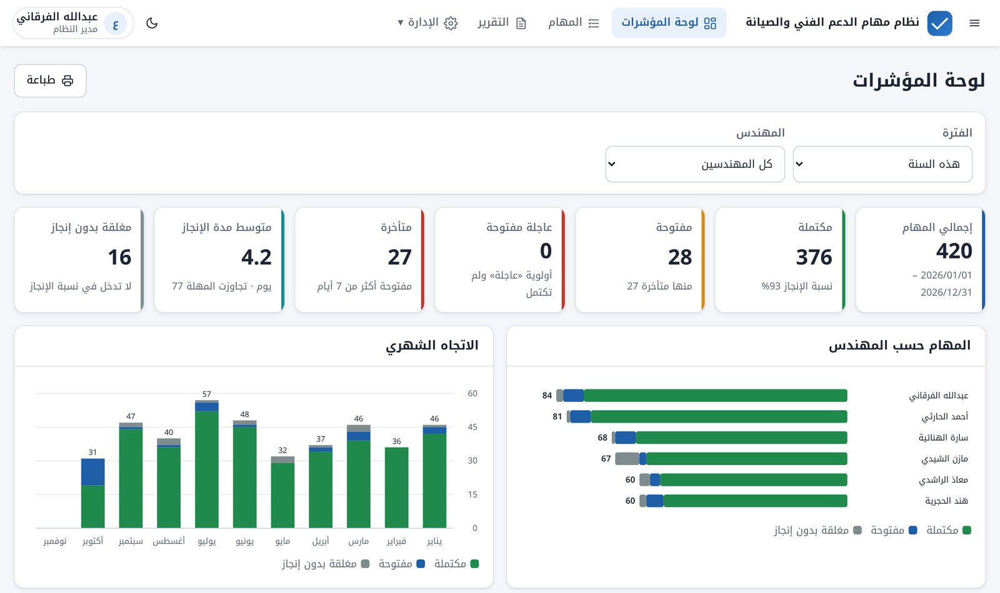
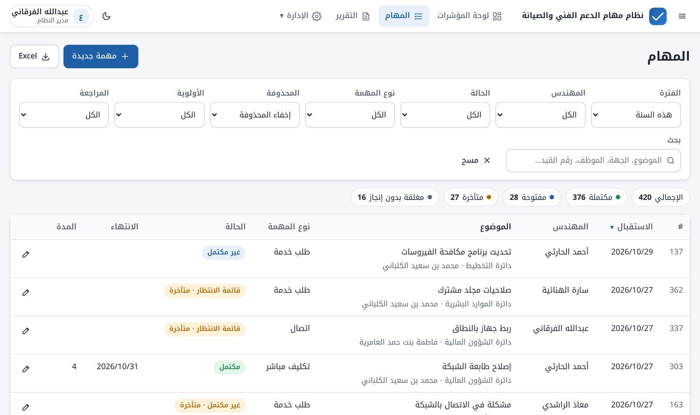
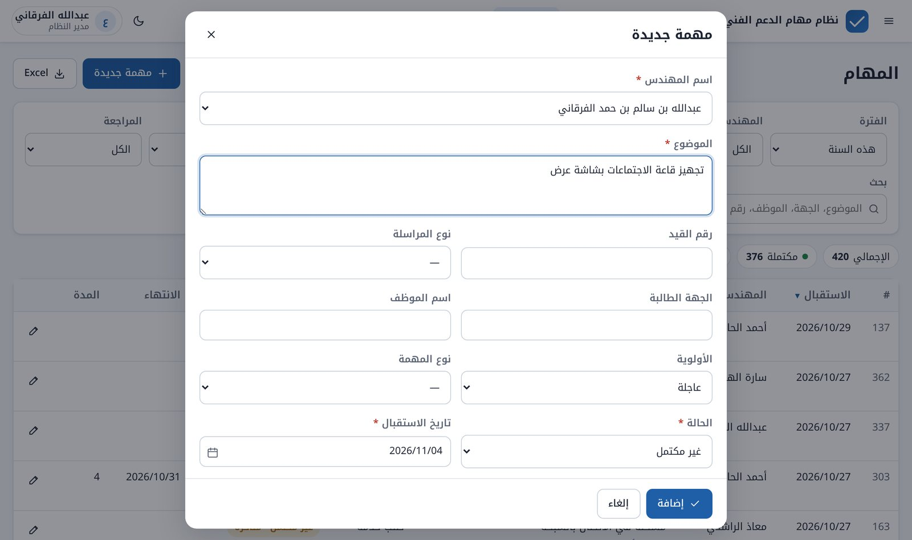
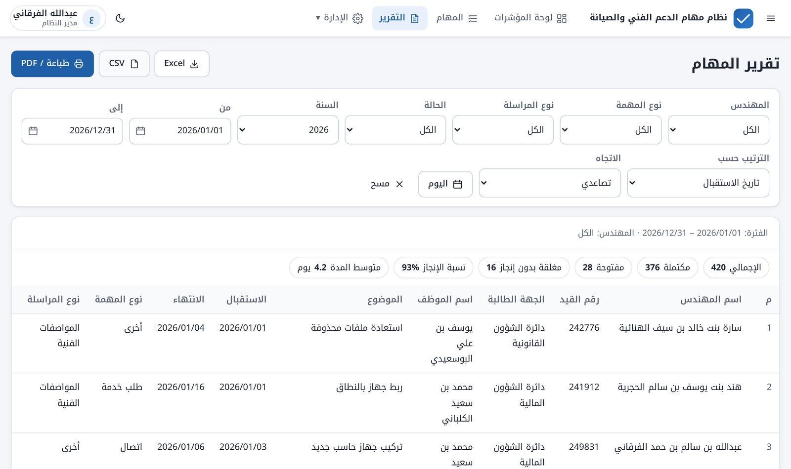
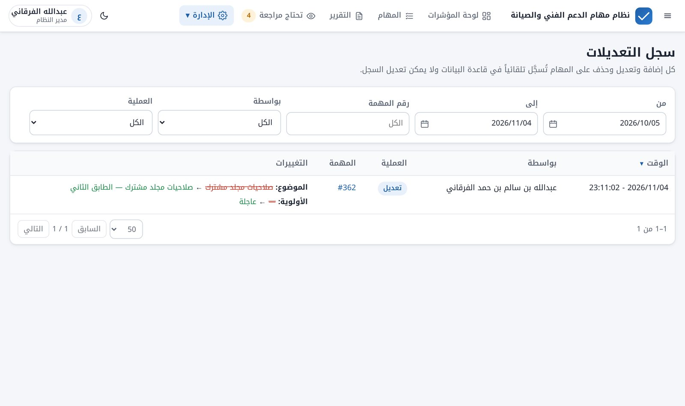
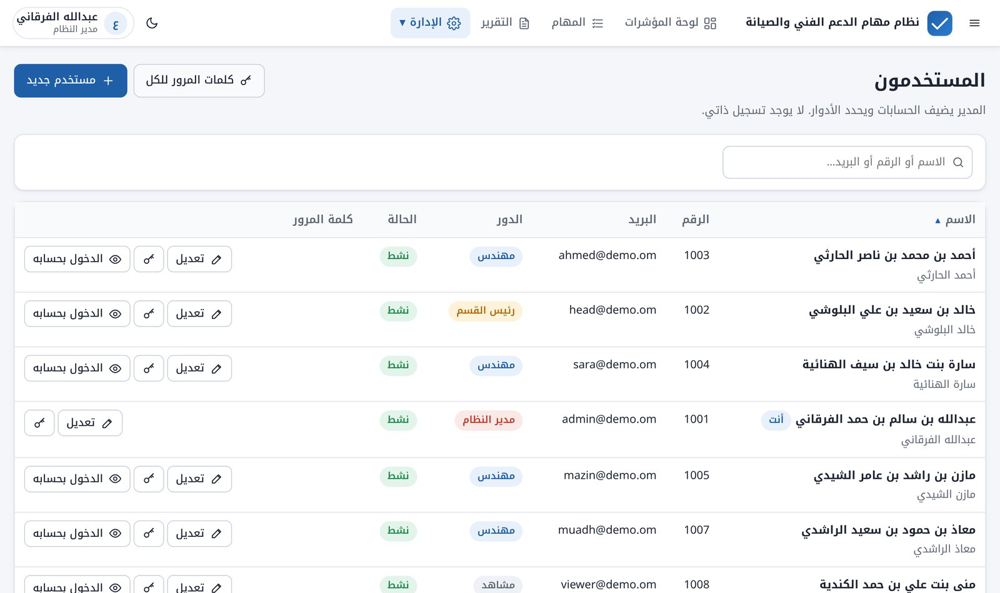
| مدير النظام | رئيس القسم | مهندس | مشاهد | |
|---|---|---|---|---|
| يرى المهام والتقارير | الكل | الكل | مهامه فقط | الكل |
| يضيف مهمة | لأي مهندس | لأي مهندس | لنفسه | ✗ |
| يعدّل مهمة | أي مهمة | أي مهمة | مهامه حتى تنتهي مدة القفل | ✗ |
| الحذف والاستعادة | ✔ | ✗ | ✗ | ✗ |
| القوائم وسجل التعديلات | ✔ | ✔ | ✗ | ✗ |
| المستخدمون والإعدادات والاستيراد | ✔ | ✗ | ✗ | ✗ |
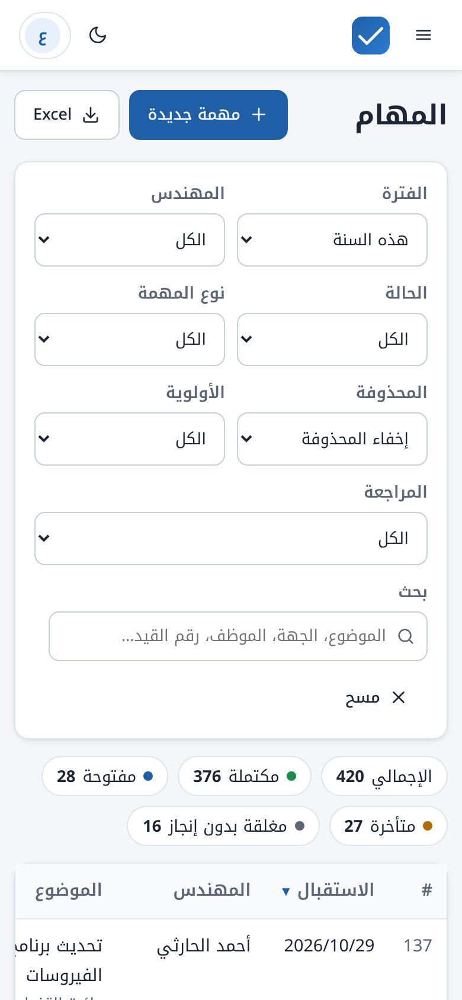
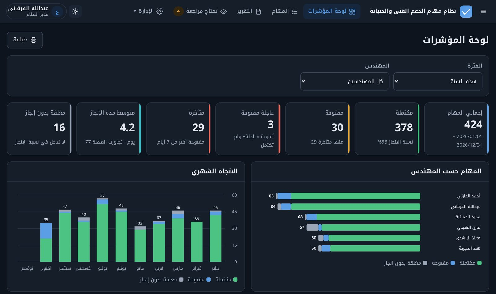
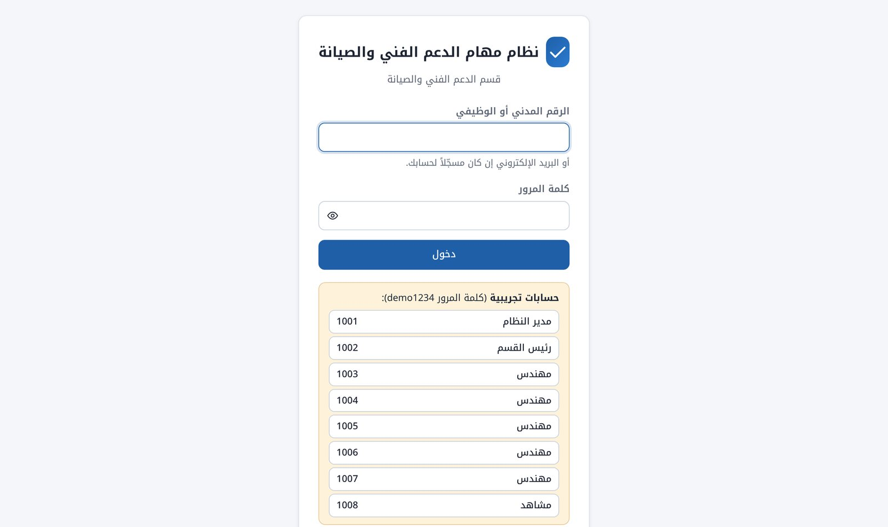
للمهندس للإدارة أين يعمل النظام، وكيف تنفصل التجربة عن الإنتاج
النظام صفحة ويب واحدة تعمل في المتصفح، تتصل مباشرة بقاعدة بيانات على الإنترنت. لا خادم خاص بالقسم، ولا مكتبات خارجية، ولا خطوة بناء: الملفات التي في المستودع هي نفسها التي تعمل.
main ← جذر الموقع /staging ← المجلد /test/| المكوّن | الدور |
|---|---|
| GitHub | يحفظ الكود وكل تاريخ تعديلاته، وينشر الموقع تلقائياً عبر GitHub Pages عند أي تحديث في أحد الفرعين. |
| Supabase | قاعدة بيانات PostgreSQL مع خدمة الدخول، وواجهة للجداول، ودوال على الخادم (Edge Functions). |
| الصلاحيات (RLS) | قواعد داخل قاعدة البيانات تحدد ما يراه ويعدّله كل دور، صفاً بصف. فحوصات الواجهة للراحة فقط. |
| دوال الخادم | admin-users لإدارة المستخدمين، وauth-login للدخول بالرقم، وrefresh-staging لنسخ بيانات الإنتاج إلى التجربة. |
| محوّل البيانات | الشاشات لا تعرف أي قاعدة تعمل خلفها. يمكن الانتقال لقاعدة أخرى بكتابة «محوّل» جديد دون تعديل أي شاشة. |
| الوضع التجريبي | بلا ربط بقاعدة بيانات يعمل النظام ببيانات وهمية داخل المتصفح. منه أُخذت صور هذا المستند. |
| الإنتاج | التجربة | |
|---|---|---|
| من يستخدمها | موظفو القسم | مدير النظام للتجربة قبل الاعتماد |
| الرابط | …github.io/Tasks-Dashboard-Live/ | …github.io/Tasks-Dashboard-Live/test/ |
| فرع الكود | main | staging |
| قاعدة البيانات | مشروع الإنتاج، سكيما support_tasks | مشروع Tasks-Test، سكيما support_tasks_staging |
| حسابات الدخول | مستقلة تماماً: تغيير كلمة مرور أو حذف في التجربة لا يمس الإنتاج | |
| الشكل | عادي | شريط بنفسجي أعلى الصفحة، و[تجربة] في عنوان التبويب |
| البيانات | الحقيقية | نسخة من الإنتاج بزر «تحديث بيانات التجربة من الإنتاج» |
/test/ يعني التجربة، والجذر يعني الإنتاج. لذلك يُنقل الكود كما هو دون تعديل أي ملف، ولكل نسخة مفاتيح حفظ مستقلة في المتصفح، فالدخول لإحداهما لا يُخرج من الأخرى.للمهندس للإدارة الضمانات التي تحمي العمل اليومي من أي تعديل
staging مع الاختبارات/test/ خلال دقيقتينstaging فقط، مع رفع رقم الإصدار وتشغيل الاختبارات.staging إلى main ويضغط Merge.staging ليطابق main، استعداداً للتعديل التالي.لا شيء يصل للإنتاج دون تجربة واعتماد من صاحب القرار.
ملفات SQL «إضافية»: تضيف ولا تحذف، فالإصدار القديم يعمل معها حتى يصل الجديد.
كل إصدار طلب دمج مستقل في GitHub، يمكن الرجوع إليه أو التراجع عنه.
كل إصدار: الطلب، وما تغيّر، وما يخص المستخدم والمهندس
الإصدارات مرتبة زمنياً في خمس مراحل. ما بين «» في خانة الطلب هو نص الطلب كما كُتب.
| المرحلة | الإصدارات | المحور |
|---|---|---|
| الأولى | 1.0.0 | بناء النظام كاملاً وتكييفه على واقع القسم |
| الثانية | 1.1.0 – 1.6.0 | بيئة التجربة، والدخول بالرقم، وإدارة كلمات المرور |
| الثالثة | 1.7.0 – 1.11.2 | تجهيز البيانات: الاستيراد بلا فقد، والمراجعة |
| الرابعة | 1.12.0 – 1.14.2 | فصل البيئات وتوحيد الحسابات، وأول تعديلات تدريبية |
| الخامسة | 1.15.0 – 1.19.0 | التواصل داخل النظام، وتحسينات التشغيل |
support_tasks: حتى يعمل النظام داخل مشروع Supabase موجود دون أن يختلط بجداوله.01_schema إلى 06_lists. الحماية الفعلية بسياسات RLS (ملف 03_security.sql)، وكانت مغطاة بـ 45 اختباراً في هذا الإصدار.support_tasks وsupport_tasks_staging).[تجربة] في العنوان لنسخة التجربة.version.json، وتحديث تلقائي عند فتح النظام، وشريط «يتوفر تحديث» أثناء العمل.docs/RELEASE.md.pg_safeupdate)، فاستُبدل بـ TRUNCATE.refresh_from_production() كانت تعمل داخل نفس المشروع. حلّت محلها في 1.12.0 دالة الخادم refresh-staging بعد فصل المشروعين.07_login_no.sql. دالة الخادم auth-login تبحث عن صاحب الرقم وتسجّل دخوله على الخادم، فلا يصل البريد للمتصفح. 6 اختبارات جديدة (51 ناجحاً).08_email_repair.sql يعيد البريد الممسوح ويمنع البريد الفارغ.reset_all في admin-users، مع 10 اختبارات جديدة (33 ناجحاً). من رقمه أقصر من حد Supabase يُترك ويُذكر في النتيجة.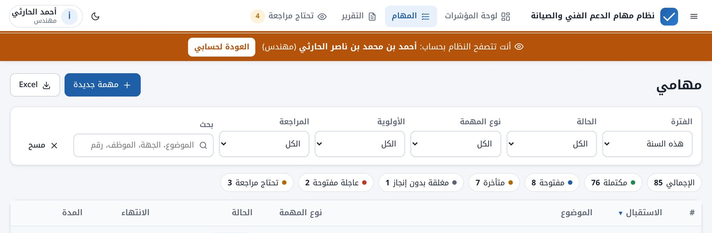
admin-users-staging، ودالة الإنتاج ترفض هذا الطلب حتى لو حُدّث كودها.09_purge_tasks.sql (للإنتاج فقط، لا يدخل ملف تجهيز التجربة).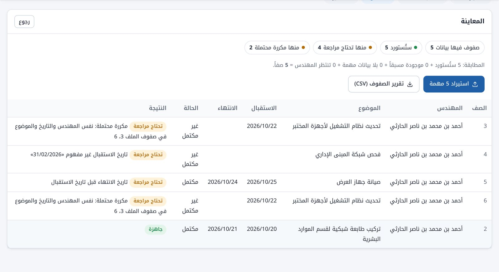
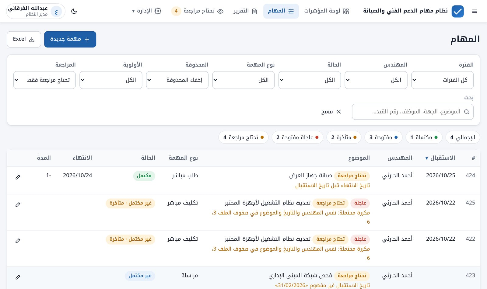
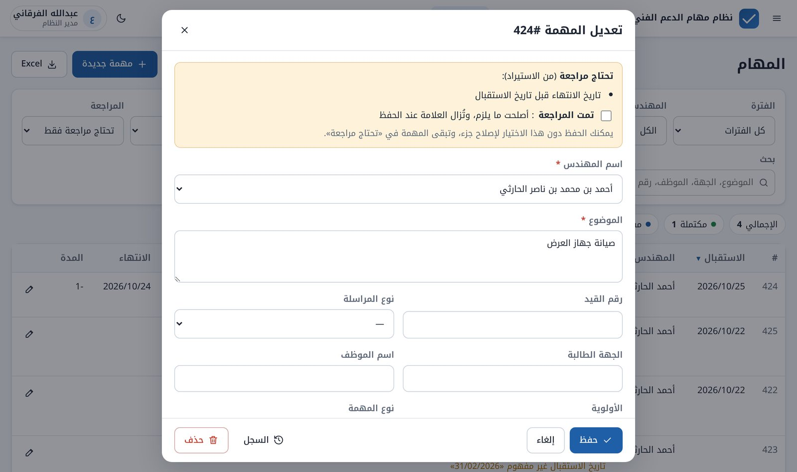
10_review.sql: عمود review_reasons، والمدير وحده يضع الأسباب. تُترك «مدة قفل التعديل» = 0 حتى تنتهي المراجعة، وإلا لن يستطيع المهندس إصلاح مهامه المكتملة القديمة.11_import_as_is.sql (بعد 10): تاريخ الاستقبال يقبل الفراغ، وقيد التواريخ يتسامح مع المهام المعلَّمة فقط.12_import_owner.sql (بعد 11)، ثم حذف كل المهام وإعادة الاستيراد ليشمل المستورد سابقاً.أصبح العدد يُحدَّث فوراً بعد حذف كل المهام، وبعد حذف مهمة أو استعادتها أو حفظها.
منطقة «اسحب الملف هنا» كانت تظهر مضغوطة في سطر. أُصلح عرضها لتأخذ مساحتها كاملة.
setup_production.sql (كل ملفات قاعدة البيانات بالترتيب) وfirst_admin.sql.refresh-staging في مشروع التجربة:PROD_URL وPROD_KEY وPROD_SYNC_LOGIN وPROD_SYNC_PASSWORD. الكتابة عبر apply_production_snapshot المسموحة لمفتاح الخادم فقط. ترتيب ربط المستخدمين: المعرّف الأصلي ثم الرقم ثم البريد. المهام المحذوفة حذفاً ناعماً في الإنتاج لا تُنسخ.13_priority.sql في التجربة (ومعه تحديث link_production.sql لتُنسخ الأولوية)، ثم في الإنتاج، ثم الدمج. لو نُقل الإصدار قبل تنفيذ الملف في الإنتاج لتعطلت صفحة المهام فيه.main للإنتاج، والفرع staging للتجربة في المجلد /test/.staging في Environments ← github-pages ← Deployment branches، وPages ← Source: GitHub Actions.
staging رفضته حماية البيئة (أُضيف الفرع)، ونشر قديم يعمل بالتوازي (أصبح المصدر Actions)، وتأخر في طابور GitHub نحو 30 دقيقة (من جهة GitHub).
setup_staging.sql، ونشر دوال التجربة الثلاث.كان رقم الإصدار يظهر للمدير فقط في الإعدادات. أصبح يظهر لكل الأدوار في قائمة المستخدم (الاسم أعلى الصفحة)، فيعرف أي موظف إصداره عند الإبلاغ عن ملاحظة.
14_announcement.sql: إعداد announcement في جدول الإعدادات، يعدّله المدير فقط.أصبح الإخفاء مرتبطاً بالمستخدم نفسه، فمن أخفاه لا يؤثر على غيره ولو استخدموا نفس الجهاز.
| النوع | الشكل | زر الإخفاء | يختفي عندما |
|---|---|---|---|
| عادي | 📢 شريط أصفر | نعم، لكل مستخدم بنفسه | يخفيه المستخدم، أو يمسحه المدير، أو ينتهي وقته |
| مهم | ⚠️ شريط أحمر | لا | يمسحه المدير أو ينتهي وقته فقط |
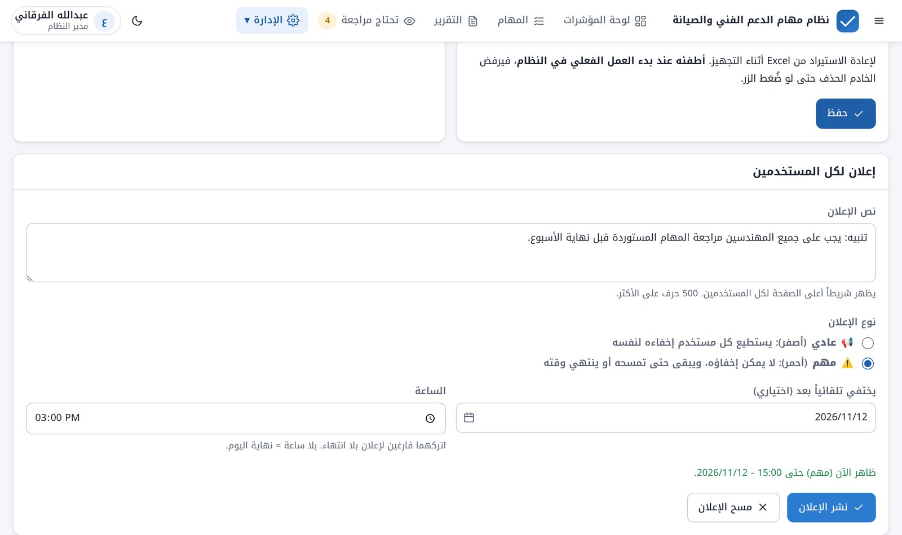
15_announcement_type.sql: إعدادا announcement_type وannouncement_expires_at. منع إخفاء «المهم» مفروض من الواجهة، وهو كافٍ لغرضه لكنه ليس حماية على الخادم.sync_user_id في جدول الإعدادات (بلا ملف SQL). الاستثناء مفروض في دالة admin-users، فتُحدَّث في المشروعين قبل الدمج. 3 اختبارات جديدة (53 ناجحاً).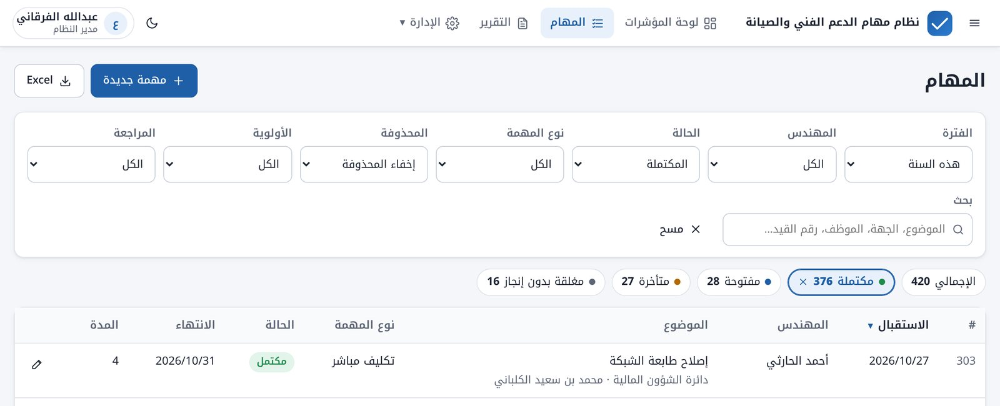
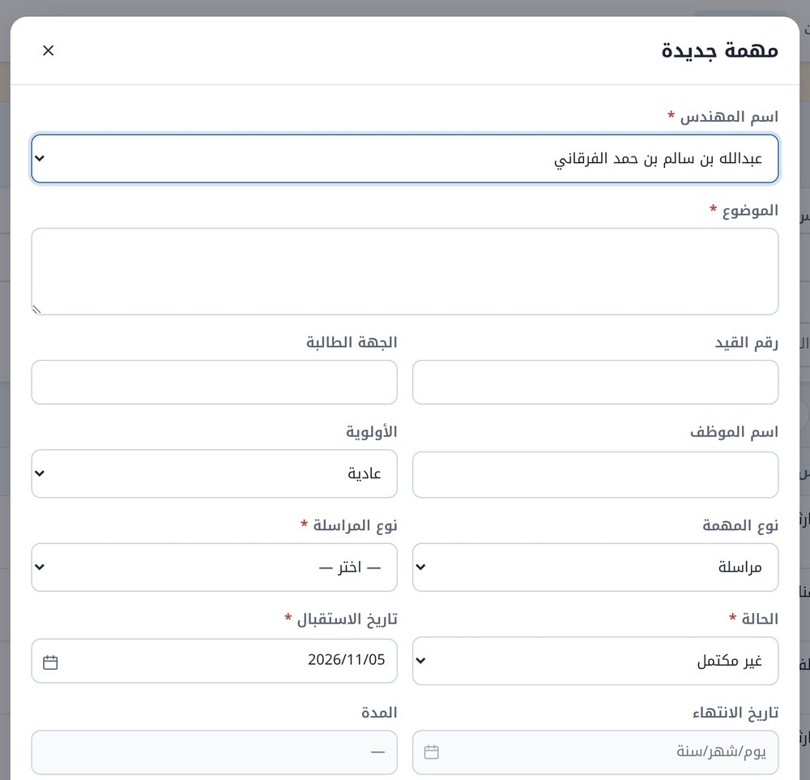
main تنسخ عملية «مزامنة المرجع» الإنتاج إلى مستودع الحساب الأساسي تلقائياً.REFERENCE_TOKEN في مستودع 2024: مفتاح Fine-grained من الحساب الأساسي على مستودع واحد، بصلاحيتي Contents وWorkflows (الثانية لازمة لأن الكود يحتوي ملفات .github/workflows). عند انتهاء المفتاح: Regenerate token ثم تحديث السر.للإدارة للمهندس لماذا صار النظام على ما هو عليه
| القرار | المبرر |
|---|---|
| بلا مكتبات خارجية | لا شيء يتعطل لأن مكتبة تغيرت أو توقفت، ولا خطوة بناء: ما في المستودع هو ما يعمل، ويمكن فهمه وتعديله مباشرة. |
| Supabase وGitHub Pages | قاعدة بيانات PostgreSQL حقيقية مع صلاحيات على مستوى الصف، واستضافة مجانية للموقع. |
| الصلاحيات داخل قاعدة البيانات | الواجهة يمكن التلاعب بها من المتصفح، أما قواعد قاعدة البيانات فلا. لذلك فحوصات الواجهة للراحة فقط. |
| الدخول بالرقم المدني/الوظيفي | ليس لكل الموظفين بريد مسجّل، والرقم معروف لكل موظف. |
| الاستيراد «كما في الملف» | لا تختفي مهمة ولا تتغير قيمة دون علم صاحبها. المشكلة تُعلَّم ليصلحها من يعرف الحقيقة. |
| المهمة المستوردة باسم مهندسها | السجل يعكس صاحب العمل الحقيقي، مع حفظ من نفّذ الاستيراد. |
| فصل الإنتاج في مشروع مستقل | تجربة كلمات المرور والحذف في التجربة لا تمس الإنتاج أبداً. |
| حساب GitHub واحد، وحساب Supabase واحد بمشروعين | إدارة أبسط دون التنقل بين الحسابات، مع بقاء البيئتين منفصلتين. |
| الحساب الأساسي في GitHub مرجعاً | يبقى نسخة مطابقة للإنتاج في حساب مستقل، تُحدَّث تلقائياً بعد كل دمج. |
| لا رسائل بريد من النظام | طلب صريح: «حاليا النظام في طور التصميم والتطوير فلا داعي لإرسال ايميلات أيا كان نوعها». |
| ملفات SQL «إضافية» فقط | تُنفَّذ قبل الدمج دون أن تكسر الإصدار الحالي، فلا توقف للعمل أثناء التحديث. |
| أفكار للدراسة لا للتنفيذ | ما يُطرح بصيغة «مجرد فكرة» يُدرس ويُشرح ولا يُنفَّذ، مثل الرجوع لإصدار سابق، والمستودع العام والخاص، ونقل بيانات التجربة إلى الإنتاج. |
للمهندس للإدارة المبادئ المطبّقة في كل إصدار
في الكود المفتاح العام فقط (Publishable)، وهو مصمَّم ليكون في المتصفح. مفتاح الخادم (service_role) لا يوضع في المستودع ولا في المتصفح أبداً، وتستخدمه دوال الخادم من بيئة Supabase نفسها.
كلمات مرور حساب المزامنة وقواعد البيانات تُحفظ في أسرار Supabase فقط، ولا تُرسل في المحادثات ولا تُكتب في أي ملف.
التسجيل الذاتي مغلق، ومدير النظام وحده يضيف الحسابات. رسالة خطأ واحدة عند الدخول، وإيقاف مؤقت بعد 8 محاولات خاطئة.
سياسات RLS لكل جدول ولكل دور، مختبرة آلياً. المهندس لا يرى إلا مهامه، حتى لو حاول من خارج الواجهة.
كل تغيير على المهام يُسجَّل تلقائياً في قاعدة البيانات، ولا يستطيع أحد تعديل هذا السجل من الواجهة.
الحذف العادي ناعم وقابل للاستعادة. الحذف الجماعي في الإنتاج يتطلب إعداداً مفعّلاً، وينزّل نسخة احتياطية أولاً.
للمهندس كيف نتأكد أن الجديد لا يكسر القديم
| البند | الحجم التقريبي |
|---|---|
| الواجهة (JavaScript) | 4,700 سطر |
| التنسيق (CSS) | 440 سطراً |
| قاعدة البيانات (SQL) | 1,430 سطراً في 15 ملفاً مرقّماً |
| دوال الخادم (TypeScript) | 680 سطراً في 3 دوال |
| ملفات المستودع | 85 ملفاً |
للإدارة للمهندس قبل الإطلاق وبعده
| # | الخطوة | الحالة |
|---|---|---|
| 1 | اعتماد الإصدار 1.16.0 ونقله للإنتاج (بعد تنفيذ ملف 15 في المشروعين) | تم |
| 2 | الاستيراد النهائي من Google Sheets إلى الإنتاج، ثم نسخ البيانات إلى التجربة | عند الإطلاق |
| 3 | مراجعة المهام المعلَّمة «تحتاج مراجعة» من المهندسين | بعد الاستيراد |
| 4 | إيقاف «السماح بحذف كل المهام» في إعدادات الإنتاج | عند الإطلاق |
| 5 | ضبط «مدة قفل التعديل» بعد انتهاء المراجعة | بعد المراجعة |
| العمل | التفاصيل |
|---|---|
| تنظيف 9 نوفمبر | تذكير مجدول بإيقاف أو حذف مشروع التجربة القديم في حساب Supabase القديم، وأرشفة مستودع التجربة القديم وإيقاف موقعه. لا شيء يُنفَّذ دون موافقة. |
| تحديث أدوات النشر | تحديث إصدارات خطوات GitHub Actions لإزالة تنبيه Node 20. اختياري، لا يؤثر على العمل. |
| الخطر | المعالجة |
|---|---|
| تعديل يكسر شيئاً في الإنتاج | التجربة أولاً، والاختبارات الآلية، والتراجع بزر Revert خلال دقائق. |
| فقد بيانات | الحذف ناعم، والحذف الجماعي مقفل بعد الإطلاق، ونسخة Excel احتياطية قبل أي إصدار فيه SQL. |
| حدود الخطط المجانية | الخطط المجانية لها حدود في الحجم، وقد يُوقف Supabase المشروع غير المستخدم مؤقتاً بحسب شروط الخطة. الاستخدام اليومي يبقيه نشطاً، وتُراجع الشروط دورياً. |
| الاعتماد على مدير نظام واحد | دور «مدير النظام» يمكن منحه لأكثر من مستخدم، والتوثيق (هذا المستند ودليلا التركيب والإصدار) يمكّن غيره من المتابعة. |
| تأخر النشر من جهة GitHub | حدث مرة (نحو 30 دقيقة). الإصدار القديم يبقى يعمل أثناء الانتظار، فلا توقف للعمل. |
للمهندس الحسابات والمعرّفات والملفات. لا قيم سرية في هذا الملحق
| البند | الإنتاج | التجربة |
|---|---|---|
| المستودع | abdullah-alfurqani-2024/Tasks-Dashboard-Live | |
| الفرع | main | staging |
| الرابط | https://abdullah-alfurqani-2024.github.io/Tasks-Dashboard-Live/ | …/Tasks-Dashboard-Live/test/ |
| مشروع Supabase | lklbdvepqvmvagjjedht | iwawaoweyldzqtuyzbyt (Tasks-Test) |
| السكيما | support_tasks | support_tasks_staging |
| دالة المستخدمين | admin-users | admin-users-staging |
| دالة الدخول بالرقم | auth-login (Verify JWT متوقف) | auth-login-staging (Verify JWT متوقف) |
| دالة نسخ البيانات | — | refresh-staging |
| أسرار الدوال (أسماء) | — | PROD_URL، PROD_KEY، PROD_SYNC_LOGIN، PROD_SYNC_PASSWORD |
| مفاتيح الحفظ في المتصفح | tsk. | tsk.stg. |
| المستودع المرجعي | abdullah-alfurqani/Tasks-Dashboard-Live (الحساب الأساسي)، يُحدَّث تلقائياً بالسر REFERENCE_TOKEN: مفتاح Fine-grained على هذا المستودع فقط بصلاحيتي Contents وWorkflows | |
| الملف | الغرض | الإصدار |
|---|---|---|
01_schema.sql | الجداول والأنواع والعرض v_tasks | 1.0.0 |
02_functions.sql | الدوال والمشغّلات: قواعد الإدخال، والسجل، وحماية الأدوار | 1.0.0 |
03_security.sql | سياسات RLS والصلاحيات | 1.0.0 |
04_seed.sql | القيم الأولية والإعدادات | 1.0.0 |
05_first_admin.sql | أول مدير نظام | 1.0.0 |
06_lists.sql | قوائم القسم الفعلية | 1.0.0 |
07_login_no.sql | الرقم المدني/الوظيفي | 1.3.0 |
08_email_repair.sql | إصلاح البريد الممسوح | 1.3.1 |
09_purge_tasks.sql | حذف كل المهام في الإنتاج (بإعداد) | 1.8.0 |
10_review.sql | أسباب المراجعة | 1.9.0 |
11_import_as_is.sql | قبول المهام المعلَّمة كما هي | 1.10.0 |
12_import_owner.sql | الإدخال باسم المهندس عند الاستيراد | 1.11.0 |
13_priority.sql | أولوية المهمة | 1.13.0 |
14_announcement.sql | إعلان المدير | 1.15.0 |
15_announcement_type.sql | نوع الإعلان وتاريخ انتهائه | 1.16.0 |
ملفات التجهيز الكاملة مولَّدة من هذه الملفات: supabase/production/setup_production.sql وsupabase/staging/setup_staging.sql. وفي supabase/staging/ أيضاً link_production.sql (استقبال نسخة الإنتاج) وpurge_tasks.sql.
| المسار | المحتوى |
|---|---|
index.html | الصفحة الوحيدة للنظام |
js/config.js | إعدادات النسختين، وتحديد النسخة من الرابط |
js/app.js | الإطار العام والمسارات والشريط العلوي والإعلانات |
js/core/ وjs/ui/ | الأدوات المشتركة ومكونات الواجهة |
js/lib/ | Excel وCSV وZIP والرسوم والإحصاءات، مكتوبة يدوياً |
js/pages/ | الشاشات |
js/data/ | محوّل Supabase والمحوّل التجريبي |
supabase/ | ملفات SQL، ودوال الخادم، والاختبارات |
tools/ | رقم الإصدار، وتوليد ملفات التجهيز، وبناء هذا المستند |
docs/ | دليل التركيب، ودليل الإصدار، وهذا المستند ومصدره (لا تُنشر في الموقع) |
.github/workflows/pages.yml | النشر التلقائي للنسختين |
.github/workflows/mirror.yml | مزامنة المستودع المرجعي بعد كل دمج |
| الأمر | الغرض |
|---|---|
node tools/release.mjs 1.17.0 | رفع رقم الإصدار في version.json وjs/version.js |
node tools/production-sql.mjs | توليد ملف تجهيز الإنتاج |
node tools/staging-sql.mjs | توليد ملف تجهيز التجربة |
node tools/build-report.mjs | بناء ملف PDF لهذا المستند من مصدره |
python3 supabase/tests/run_tests.py | اختبارات قاعدة البيانات |
sh supabase/tests/functions/run.sh | اختبارات دوال الخادم |
للمهندس للإدارة تشغيل النظام كاملاً في حساب GitHub وحساب Supabase آخرين
أربع مراحل. في الكود ثلاثة ملفات فقط تحمل أسماء الحسابات الحالية. NEW = اسم حساب GitHub الجديد. والنظام القديم يبقى يعمل حتى يُوقف، فيُجرَّب الجديد بجانبه قبل التحويل.
supabase/production/setup_production.sql.support_tasks.supabase/production/first_admin.sql ببياناتك.admin-users (Verify JWT مفعّل) وauth-login (Verify JWT متوقف)، والكود من supabase/functions.supabase/staging/setup_staging.sql، ثم أول مدير بـ supabase/staging/first_admin.sql.support_tasks_staging، وAuthentication كالإنتاج.admin-users-staging (مفعّل)، وauth-login-staging (متوقف)، وrefresh-staging (مفعّل).| الملف | ما يتغير |
|---|---|
js/config.js | hosts ← NEW.github.io، ورابط ومفتاح عام لكل مشروع |
.github/workflows/pages.yml | الشرط github.repository == 'NEW/Tasks-Dashboard-Live'. بدونه لا يُنشر الموقع |
.github/workflows/mirror.yml | يُحذف، أو يُوجَّه إلى مستودع مرجعي جديد مع سر REFERENCE_TOKEN جديد |
staging.protect-main: منع الحذف والكتابة فوق التاريخ، وطلب دمج بلا موافقات (0)، بدون Linear history أو Signed commits أو Status checks.PROD_URL وPROD_KEY وPROD_SYNC_LOGIN وPROD_SYNC_PASSWORD.الخطوات نفسها في دليل التركيب docs/SETUP.md.
للقارئ غير التقني
| المصطلح | المعنى |
|---|---|
| الإنتاج (Production) | النسخة التي يعمل عليها موظفو القسم ببياناتهم الحقيقية. |
| التجربة (Staging) | نسخة مطابقة لتجربة أي تعديل قبل وصوله للموظفين. |
| المستودع (Repository) | مكان حفظ كود النظام وكل تاريخ تعديلاته في GitHub. |
| الفرع (Branch) | خط مستقل من الكود داخل المستودع: main للإنتاج وstaging للتجربة. |
| طلب الدمج (Pull Request) | طلب نقل تعديلات التجربة إلى الإنتاج، يُراجَع ثم يُعتمد بزر Merge. |
| التراجع (Revert) | إلغاء إصدار والعودة للذي قبله، بزر في صفحة طلب الدمج. |
| Supabase | خدمة سحابية توفر قاعدة البيانات وحسابات الدخول ودوال الخادم. |
| السكيما (Schema) | مجموعة جداول قاعدة البيانات الخاصة بالنظام، معزولة عن غيرها. |
| RLS | صلاحيات على مستوى الصف داخل قاعدة البيانات: تحدد ما يراه كل مستخدم من البيانات. |
| دالة الخادم (Edge Function) | برنامج صغير يعمل على خادم Supabase لعمليات لا يجوز أن تتم في المتصفح. |
| ملف SQL | أوامر تعدّل بنية قاعدة البيانات. تُنفَّذ مرة واحدة لكل مشروع، بالترتيب. |
| المفتاح العام | مفتاح يعرّف النظام بقاعدة البيانات، ومصمَّم ليكون ظاهراً في المتصفح. |
| الحذف الناعم | إخفاء المهمة مع بقائها في قاعدة البيانات لإمكان استعادتها. |
| الوضع التجريبي | تشغيل النظام ببيانات وهمية داخل المتصفح، بلا قاعدة بيانات. |
كل نسخة من هذا المستند وما أُضيف فيها
| التاريخ | حتى الإصدار | التغيير |
|---|---|---|
| 2026/11/04 | 1.16.0 | النسخة الأولى من المستند: كل الإصدارات من 1.0.0 إلى 1.16.0. |
| 2026/11/05 | 1.16.0 | نقل 1.16.0 إلى الإنتاج، وتفعيل المزامنة التلقائية للمستودع المرجعي. |
| 2026/11/05 | 1.16.1 | إصلاح رسائل أخطاء الخادم. |
| 2026/11/05 | 1.17.0 | حماية حساب مزامنة التجربة. |
| 2026/11/05 | 1.18.0 | أزرار الإحصائيات تفلتر. |
| 2026/11/05 | 1.18.0 | ملحق (ب): نقل النظام إلى حسابات جديدة. |
| 2026/11/05 | 1.19.0 | نوع المراسلة لمهام «مراسلة» فقط. |